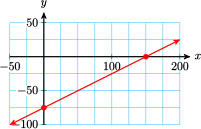
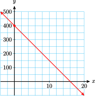

Section 8.4 Section 8.4 Linear Inequalities
Subsection 1. Solve a linear inequality
Before we solve inequalities in two variables, let's review solving linear inequalities in one variable.
Subsubsection Example
Example 8.20.
Solve \(~3k-13 \lt 5+6k\)
We begin just as we do to solve an equation. The only difference is that we must reverse the direction of the inequality if we multiply or divide by a negative number.
In interval notation, the solution set is \((-6,\infty)\text{.}\)
Subsubsection Exercise
Notebook 8.21.
Solve \(~~4(3a-7) \gt -18+2a.~~\) Write the solution with interval notation.
Notebook 8.22.
Solve \(~~4 \le \dfrac{-3x}{4}-2.~~\) Write the solution with interval notation.
Notebook 8.23.
Solve \(~~15 \ge -6+3m \ge -6.~~\) Write the solution with interval notation.
Notebook 8.24.
Solve \(~~\dfrac{-9}{2} \lt \dfrac{5-2n}{-4} \le -1.~~\) Write the solution with interval notation.
Subsection 2. Graph a line
The boundary of the solution set for a linear inequality in two variables is made up of portions of straight lines.
Subsubsection Examples
Example 8.25.
Use the most convenient method to graph the equation.
- \(\displaystyle 5x-10y=750\)
- \(\displaystyle y=400-25x\)
-
This equation is in the form \(Ax+By=C\text{,}\) so the intercept method of graphing is convenient. The intercepts are \((150,0)\) and \((0,-75)\text{.}\) The graph is shown below.
 -
This equation is in the form \(y=mx+b\text{,}\) so the slope-intercept method of graphing is convenient. The \(y\)-intercept is \((0,400)\text{,}\) and the slope is \(-25\text{.}\) The graph is shown below.

Subsubsection Exercise
Notebook 8.26.
Graph the equation \(~~24x+9y=432\)
Notebook 8.27.
Graph the equation \(~~y=12x+60\)
Notebook 8.28.
Graph the equation \(~~y=600-1.25x\)
Notebook 8.29.
Graph the equation \(~~45x-30y=15\)
Subsection 3. Solve a 2x2 system
To find the vertices of the boundary of the solution set, we solve a linear 2x2 system.
Subsubsection Examples
Example 8.30.
Use substitution to solve the system:
We start by solving the second equation for \(x\) to get \(x=2y-2\text{.}\) Then we substitute this expression for \(x\) into the first equation, which gives us
We solve this equation for \(y\) to find \(y=1\text{.}\) Finally, we substitute \(y=1\) into our first step to find
The solution is \(x=0,~y=1\text{,}\) or \((0,1)\text{.}\)
Example 8.31.
Use elimination to solve the system:
We multiply the first equation by 3 and the second equation by \(-2\) in order to eliminate \(x\text{.}\)
Adding these two equations gives us \(-y=1\text{,}\) or \(y=-1\text{.}\) Finally, we substitute \(y=-1\) into either equation (we choose the first equation), and solve for \(x\text{.}\)
We find\(x=1\text{,}\) so the solution is \(x=1,~y=-1\text{,}\) or \((1,-1)\text{.}\)
Subsubsection Exercise
Notebook 8.32.
Solve the system:
Notebook 8.33.
Solve the system:
Notebook 8.34.
Solve the system:
Notebook 8.35.
Solve the system: